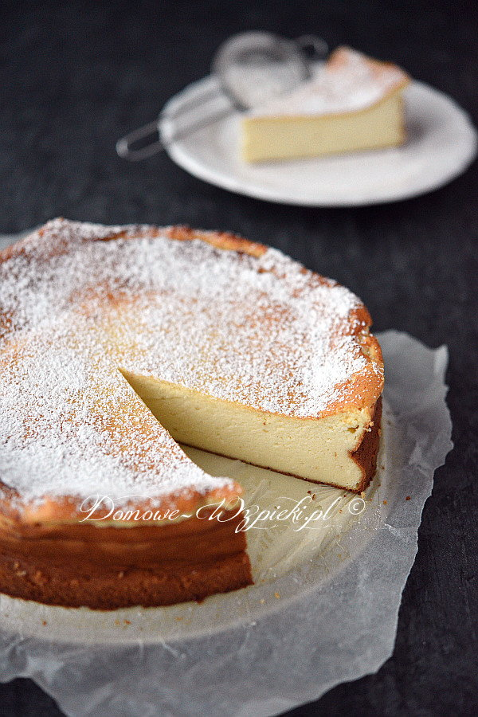

Puszysty sernik bez spodu

Opis
Tradycyjny sernik pieczony bez ciasta. Jest wilgotny, puszysty, delikatny, a do tego łatwy i szybki do przygotowania. Można przygotować go na klasycznym twarogu, twarogu z wiaderka lub quarku. Można wzbogacić jego smak dodając startą skórkę z pomarańczy, rodzynki lub ulubiony aromat.
Puszystości dodaje sernikowi piana z białek. To przez nią sernik rośnie, a potem opada. Nie przejmujcie się tym. Opadnięty, a może nawet popękany sernik można przykryć polewą czekoladową. Swój wygląd zrekompensuje smakiem.
Składniki
- 1 kg twarogu półtłustego dwukrotnie zmielonego, twarogu z wiaderka lub quarku 20%
- 250 g cukru (= 1,25 szklanki)
- 3 łyżeczki cukru waniliowego
- 100 g masła (lub margaryny)
- 7 jajek (rozmiar M)
- 2 łyżki skrobi ziemniaczanej (= 30 g)
- 2 łyżki mąki pszennej (= 30 g)
- skórka starta z pomarańczy
- ok. 2 garści rodzynek
- parę kropli aromatu
- cukier puder do posypania
Sposób przygotowania
-
Dno tortownicy o średnicy 26 cm wyłożyć papierem do pieczenia, a następnie zacisnąć obręcz.
-
Oddzielić żółtka od białek.
-
W miseczce wymieszać skrobię z mąką pszenną.
-
W misie miksera utrzeć miękkie masło z cukrem i cukrem waniliowym na jasną masę. (Cukier się nie rozpuści, masa stanie się kremowa dopiero po dodaniu żółtek). Dalej miksując na najwyższych obrotach, dodawać stopniowo po jednym żółtku.
-
Zmniejszyć obroty miksera na średnie i dodawać stopniowo ser, a następnie wymieszaną mąkę. (Teraz można dodać startą skórkę z pomarańczy, aromat lub rodzynki i wymieszać do połączenia).
-
Osobno ubić białka na sztywno i wmieszać delikatnie szpatułką do masy serowej.
-
Masę serową wyłożyć do tortownicy i wyrównać. Piec w nagrzanym piekarniku ok. 60 minut w temperaturze 170°C (grzałka góra- dół). Wyłączyć piekarnik i studzić sernik przy lekko uchylonych drzwiczkach piekarnika. Pozostawić do całkowitego ostygnięcia. Zimny sernik wstawić na parę godzin do lodówki.
-
Sernik oprószyć cukrem pudrem lub polać polewą czekoladową.